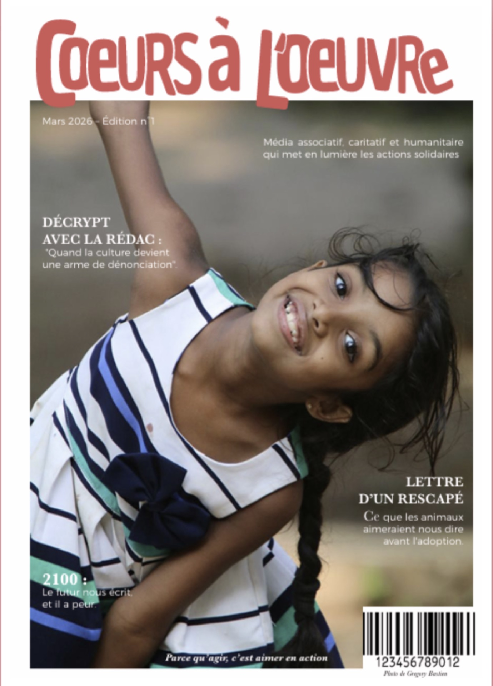
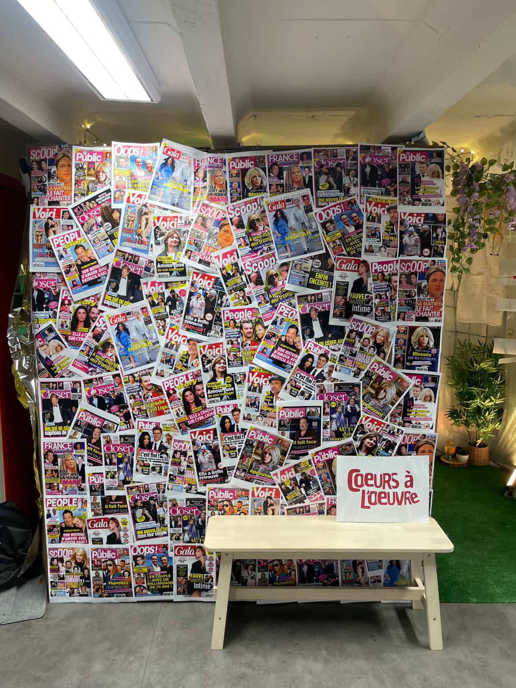
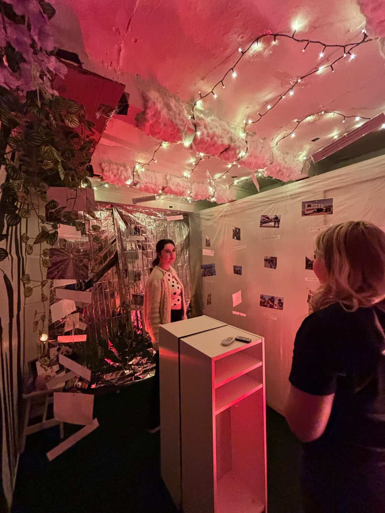
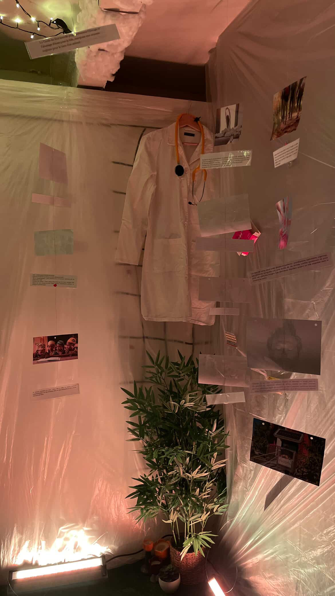

Projet éditorial & événementiel
Magazine &
Pop-up Store
Conception d'un magazine de A à Z : identité visuelle, stratégie éditoriale, production de contenus digitaux et print. Positionnement associatif, caritatif et humanitaire. Organisation d'un pop-up store sans budget et d'un quiz solidaire où chaque bonne réponse reversait 1€ à une association.

Vidéo de présentation — Magazine & Pop-up Store
Vidéo — Présentation du Pop-up Store




Le projet
Un média, un événement, une cause — trois projets en un
Ce projet ambitieux s'est articulé autour d'un positionnement fort : associatif, caritatif et humanitaire. Concevoir un magazine ne se résume pas à choisir une mise en page — c'est définir une identité, une ligne éditoriale, une façon de s'adresser à un lectorat et de défendre des valeurs. C'est ce travail fondamental qui a été mené en premier lieu, en construisant le magazine de zéro.
En parallèle de la création du magazine, le projet intégrait deux volets événementiels complémentaires : l'organisation d'un pop-up store et d'un quiz solidaire. Le pop-up store, réalisé sans budget, a nécessité une approche créative du sourcing et de la logistique — convaincre des exposants de participer, trouver des espaces, coordonner les intervenants sans pouvoir s'appuyer sur des ressources financières.
Le quiz solidaire ajoutait une dimension participative et engagée : chaque bonne réponse donnée par un participant reversait 1€ à une association partenaire. Un dispositif simple dans son principe, exigeant dans son exécution — animation, règles du jeu, relations avec l'association bénéficiaire, tout devait être pensé et préparé.
Mes missions
Éditorial, digital, événementiel — une approche 360°
- Création de l'identité du magazine : nom, charte graphique, ligne éditoriale et positionnement
- Conception de la stratégie de communication digitale autour du magazine
- Écriture de scripts et tournage de vidéos pour promouvoir le projet sur les réseaux
- Montage des vidéos et création de carrousels pour les réseaux sociaux
- Organisation du pop-up store : sourcing des exposants, logistique, gestion des relations avec les participants
- Conception et animation du quiz solidaire avec reversement à une association partenaire
Bilan
Créer avec contrainte, engager sans moyens
Organiser un pop-up store sans budget est une école de débrouillardise et de persuasion. Chaque exposant présent était là parce qu'on avait réussi à lui donner envie d'être là — pas par contrat, pas par argent, mais par le projet lui-même, par les valeurs qu'il portait et par la qualité du travail de communication réalisé en amont.
Le quiz solidaire a quant à lui démontré qu'un événement peut être à la fois ludique et engagé, sans que l'un nuise à l'autre. La mécanique de reversement par bonne réponse a créé une forme d'émulation collective : les participants jouaient pour eux-mêmes et pour une cause plus grande qu'eux.
Ce projet illustre une conviction profonde : les meilleures idées ne naissent pas des budgets les plus importants, mais de la clarté des valeurs qu'on défend et de la créativité qu'on met au service d'un objectif bien défini. Direction éditoriale, logistique événementielle et communication digitale forment un tout cohérent, et c'est cette cohérence qui fait la force d'un projet.